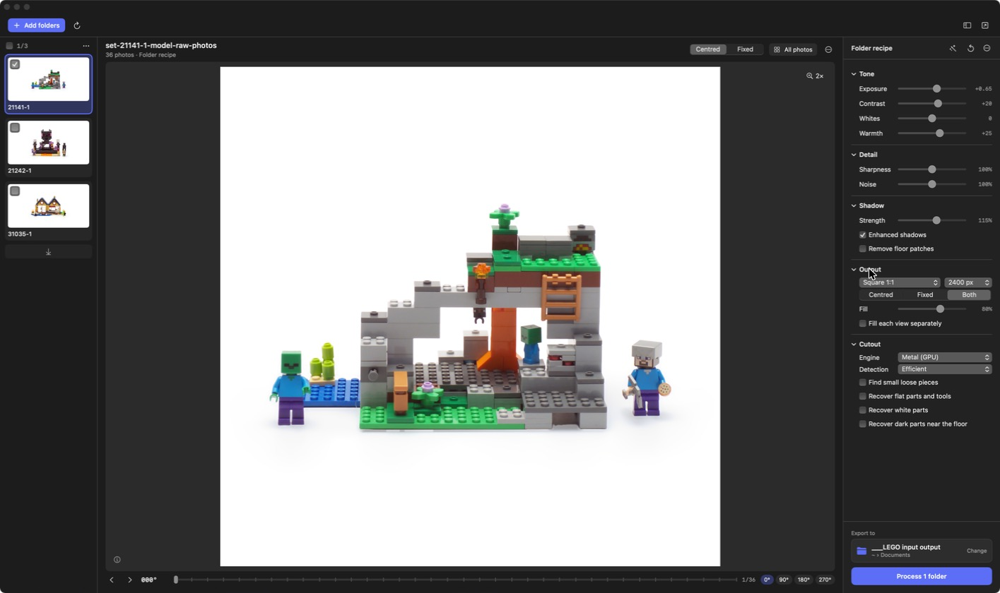
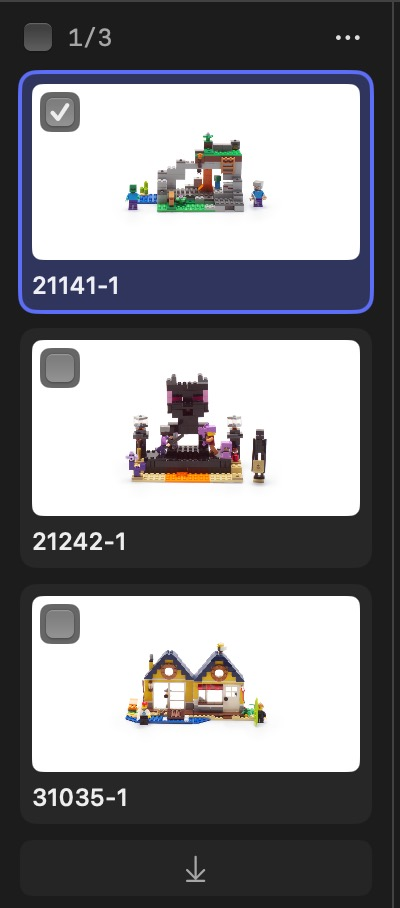
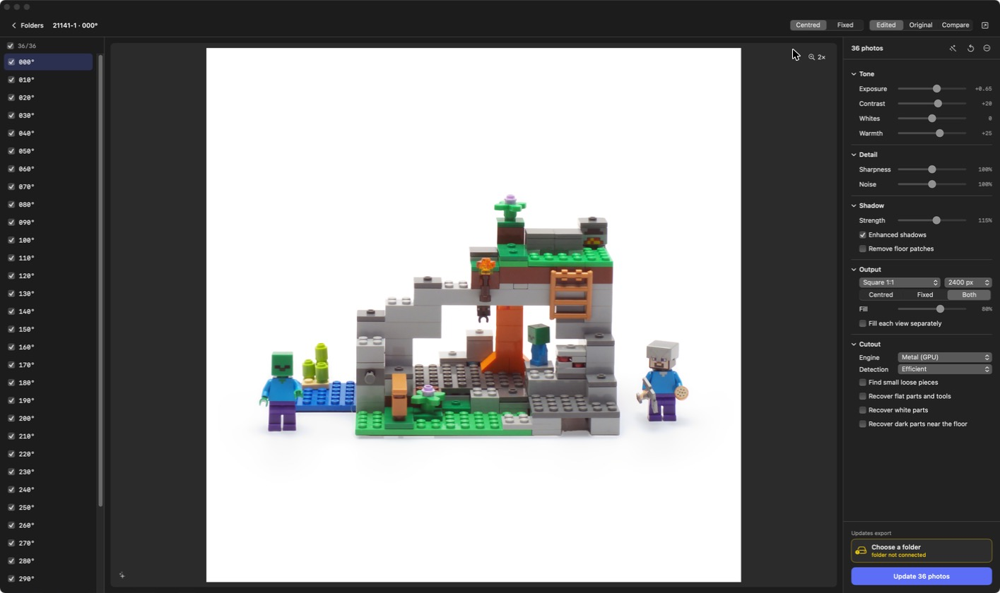
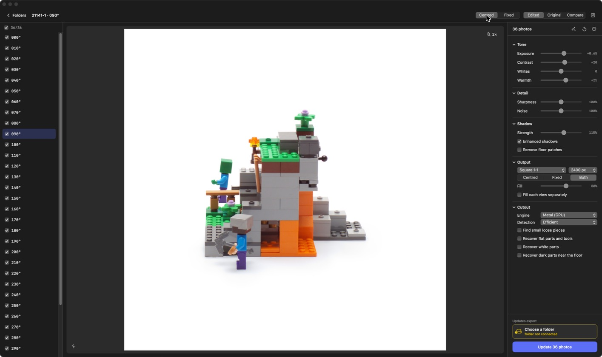
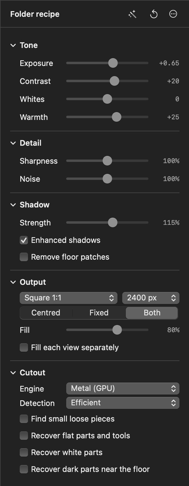
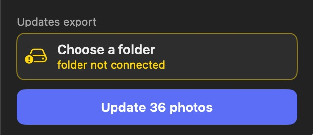

Brick Studio user guide
Brick Studio turns RAW turntable photos of LEGO sets into catalogue images: white background, real contact shadow, corrected colour, and the same framing across all 36 angles. Each export writes a white JPEG and a transparent PNG per photo.
Get started
One-time setup takes a few minutes and downloads about 1.5 GB.
You need
- A Mac with Apple Silicon (M1 or later) on macOS 14 or later
- Python 3.13 from python.org (or
brew install python@3.13) - About 3 GB free for the engine and model, plus room for exports
- Internet during setup and the first cutout; offline after that
Install without Terminal
- On the repository page, choose Code → Download ZIP, unzip it and move the folder where the app should live, for example Documents.
- Double-click Set up Brick Studio. macOS blocks it the first time: right-click it, choose Open, then Open again. On newer macOS, go to System Settings → Privacy & Security and click Open Anyway.
- If Python 3.13 or Apple's developer tools are missing, setup opens the installer. Install it, then double-click Set up Brick Studio again.
- Leave the window open until Brick Studio opens by itself.
From then on, open Brick Studio.app from that folder (you can add it to the Dock). Keep the app inside the folder, because it runs the engine that sits next to it. To update, download the newer version into the same folder and run Set up Brick Studio again.
Install with Terminal
git clone https://github.com/lukasvale/brick-studio.git cd brick-studio ./setup.sh # add --cpu-only for a smaller install, ~10× slower cutouts
The workflow
A typical session, from RAW folders to finished catalogue images.
- Add foldersDrag product folders onto the window, or press ⌘O. One folder per product, holding one rotation.
- ReviewClick a folder, step through angles with ← →, hover for the magnifier.
- AdjustTune Tone, Detail, Shadow, Output and Cutout. Edits apply to every selected folder.
- Fine-tune photosOptional. All photos lets you change single angles or mark a packaging shot.
- ExportPick a destination, press Process. Pause and resume any time.
Accepted files: RAW (DNG, CR2/CR3, NEF, ARW, RAF, RW2, ORF, PEF), JPEG, PNG and TIFF. A parent folder full of product subfolders also works. Source photos are never modified.
Folders screen
Where you build the queue, review each product and set its recipe. Click a number, or hover the list, to see what each part does.

Folder list
The queue. Folders are processed top to bottom, so the order here is the export order.

Selecting and ordering
- Click a folder to preview it. Recipe edits apply to every selected folder.
- Shift-click selects a range, ⌘-click adds or removes one.
- The checkbox on the thumbnail includes the folder in the next export. The counter at the top (1/3) shows how many are checked; the box next to it checks all or none.
- Drag a folder to reorder it. Drop it on the ↓ bar at the bottom to send it to the end.
- Right-click a folder for Mark completed and Remove folder. The ⋯ menu above the list marks every selected folder completed at once.
Folder status icons
- Spinner: exporting now. A thin bar under the thumbnail shows its progress.
- Green check: export finished.
- Yellow triangle: the export failed. It is retried up to three times; Retry failed in the toolbar tries again.
- Pause circle: paused part-way. Finished photos are kept.
- Stop circle: stopped; its unfinished export was discarded.
- Dotted circle: waiting its turn in this run.
Completed folders
Finished folders can be moved out of the queue with Mark completed. A Completed N button then appears above the list; it opens a sheet where each folder has Open images and Restore to queue.
Layout
The list can sit on the left, along the bottom, or be hidden, which helps on a laptop screen. Use the sidebar button at the top right of the window (Folders on the left, Folders below, Hide folders), or press ⌃⌘S to show or hide it.
Photo view
Opened with All photos. Here every angle is listed, and edits apply only to the photos you check.

Edited, Original and Compare
Edited shows the result, Original the photo as shot, and Compare puts both side by side. Use Compare whenever you turn on a recovery option, to check that nothing from the floor came back with the part.
Centred and Fixed crops
Centred puts every angle in the middle of the canvas at one shared scale. Fixed uses one crop for the whole rotation and keeps the model where it stood on the turntable, so a spin animation doesn't jump. The switch only appears when Output → Framing is set to Both. Here is the same 90° photo both ways:

Photo list icons
- Box: a packaging photo. Right-click a row and choose Mark as packaging photo. Packaging photos get their own settings.
- Yellow triangle: flagged for review. Check it against Original before publishing.
- Check under the preview: you are looking at the exported image.
- Sparkles under the preview: a live preview of the current recipe, not yet exported.
Review warnings
After a cutout the app checks its own work. When something looks off, a dark pill with a yellow triangle appears at the bottom-left of the preview, starting with Review:. Possible notes:
- Check product at processing boundary: the model touches the edge of the processed area.
- Check separate pieces against the original: loose pieces may be missing.
- Check recovered white parts against the original: faint outlines may be incomplete.
- Check recovered dark parts near the floor against the original
The flags don't catch every defect. Always look over fine railings, transparent bricks and pale pieces yourself.
Recipe panel
Everything that shapes the output. Sliders apply when you release them. Double-click a slider's name to reset just that slider. Hover any control in the app for the same explanation as below.

Which photos an edit changes
The panel title tells you what you are editing:
- Shared recipe: no folder selected. Changes apply to every folder that uses the shared recipe.
- Folder recipe: one folder selected. Each edit applies that control to every photo in it; other per-photo suggestions stay as they are.
- N folders: several folders selected; the edit goes to all of them.
- N photos: in the photo view. Edits apply to the checked photos only. With every photo checked, they also update the folder's settings.
- Packaging photo: packaging settings override the folder recipe for this photo.
The folder header shows the source too: Shared recipe, Folder recipe, or Saved recipe. Saved means an export of this folder already started with these settings, so the panel is locked to keep the run consistent. ⋯ → Use shared recipe drops a folder's own settings.
Header buttons
- Wand: suggest settings from your processing history for the selection.
- Circular arrow: reset every setting to its default.
- ⋯: Learn settings for new photos (automatic suggestions on or off); in the photo view also Packaging photo, Use packaging default and Save as packaging default.
- Sparkles next to the title: the values came from your history (or your last settings for this photo).
| Control | Range · default | What it does |
|---|---|---|
| Tone | ||
| Exposure | −0.5 to +1.5 · +0.65 | Brightness in stops. Highlights are compressed to protect pale bricks. |
| Contrast | −100 to +100 · 0 | Gentle contrast curve. |
| Whites | −100 to +100 · 0 | Below zero brings overexposed white bricks down while mid-tones and shadows stay put. Above zero lifts only the brightest tones. |
| Warmth | −100 to +100 · +25 | Colour temperature on top of the automatic neutral correction. |
| Detail | ||
| Sharpness | 0–200% · 75% | Output sharpening. It can't restore detail missing from a soft source photo. |
| Noise | 0–200% · 0% | Edge-preserving noise reduction. |
| Shadow | ||
| Strength | Off–200% · 200% | Strength of the contact shadow recovered from the photographed floor. 0 turns it off. |
| Enhanced shadows | checkbox | Recovers wider floor shadows. Off uses the original shadow method. |
| Remove floor patches | checkbox · off | Rechecks grey floor caught in the cutout, including solid patches beside wheels. Turn on if a hard floor patch is stuck to the model or floating under it, then inspect pale or grey parts near the base, which it can remove too. |
| Output | ||
| Canvas | Square 1:1 · Landscape 3:2 · Portrait 4:5 · Wide 16:9 | Shape of the exported image. |
| Long edge | 1600 · 2400 · 3200 px | Size of the longest side of the exported image. |
| Framing | Centred · Fixed · Both | Centred keeps every view centred at one shared scale. Fixed keeps one crop and scale for the whole rotation and preserves original positions. Both exports the two. Only the chosen framing is written. |
| Fill | 60–92% · 84% | How much of the canvas the product fills. |
| Fill each view separately | checkbox · off | Every centred view fills the chosen amount, so the product's size changes between angles. Off keeps one scale, set by the widest angle. Centred crops only. |
| Cutout | ||
| Engine | Metal (GPU) · CPU (ONNX) | Metal runs the BiRefNet model on the Apple Silicon GPU. CPU is the original rembg path; use it if Metal ever disagrees on a cutout. Masks are cached separately per engine. |
| Detection | Efficient · Detailed | Efficient uses a fast guide and one model pass. Detailed uses two passes and is slower. |
| Find small loose pieces | checkbox · off | For sets with studs, bones or tiles loose on the floor. Slower, and masks are rebuilt. Without it, pale pieces lying apart from the model can be missed. |
| Recover flat parts and tools | checkbox · off | Extra close-up detection for missing ramps, grey plates and thin dark tools. Slower on first use; may keep more floor near dark pieces. |
| Recover white parts | checkbox · off | For photos where a white wing or plate merged into the booth. Check against Original. Applies to checked photos. |
| Recover dark parts near the floor | checkbox · off | For black bumpers or plates cut away as shadow. Only long strips directly under the model are restored. Check against Original. Applies to checked photos. |
Defaults are what the reset button restores. New folders usually open with suggested values instead (see Suggested settings), which is why the screenshots show different numbers.
Exporting
The bottom of the recipe panel holds the destination and the button that starts the run.
Destination card
On the Folders screen the card reads Export to and shows the destination folder. Click it, or Change, to pick another. Right-click for Show in Finder.
In the photo view it reads Updates export: Update N photos rewrites just the checked photos inside that folder's earlier export. Export the folder from the Folders screen first. Until then the card shows Choose a folder, and updated photos go to a new Shoot-… folder instead.
Yellow card: the destination isn't reachable, usually because the external drive is unplugged. Connect it and the card turns normal again.

The Process button
| Label | When you see it |
|---|---|
| Process N folders | Checked folders that haven't been exported yet. |
| Re-export N folders | Every checked folder is already complete, failed or stopped. |
| Resume · N folders left | A paused run is waiting. |
| Process / Update N photos | In the photo view, for the checked photos. |
| Select folders to process | Nothing is checked, so the button is disabled. |
While it runs
A footer appears under the preview. A thin bar on top shows progress for the whole run. Below it:
- The folder being processed and its position in the queue.
- One cell per photo: written photos are blue, and the current one fills as it renders.
- Photo x/y · time, how long the previous photo took (last N s), and the current step.
- done/total photos · % and elapsed time for the run.
The panel is locked while a run is going, so settings can't change half-way.
| Button | What happens |
|---|---|
| Pause | Stops after the current photo and keeps everything finished. The footer shows Paused · N folders left with Resume, which continues with the paused folder and the ones after it. |
| Stop | Asks Stop this export? first. Stop and discard export moves the unfinished folder's export to the Trash; Keep processing carries on. |
When the run ends the footer reads Finished · N folders · N photos, with a failed count if any folder failed. For long runs, keep the Mac plugged in with the lid open. Brick Studio prevents idle sleep, but closing the lid can still suspend it.
What gets written
Each product goes to its own folder inside the destination. File names match the source photos.
<destination>/<folder name>-<id>/ centered/jpeg/ white background, one scale for the whole rotation centered/transparent/ matching PNGs with transparency fixed-frame/jpeg/ one crop for the whole rotation, original positions kept fixed-frame/transparent/
Only the framing chosen under Output → Framing is written. Use Open exports in Finder (top-right of the window) or ⋯ → Open images on a folder to jump to the results.
Suggested settings
New folders open with tone and detail settings suggested by comparing their photos with earlier work. Brick Studio ships with a starting history of about 12,600 settings from roughly 300 products. After that it learns only from your own corrections, saved when you export.
- Press the wand in the panel header to re-suggest settings for the selected folders or checked photos.
- Turn automatic suggestions off with ⋯ → Learn settings for new photos.
- To start with no history, quit the app and delete
work/learning/history.sqlite3.
Shortcuts
| Keys or gesture | Action |
|---|---|
| ⌘O | Add folders |
| ← → | Previous or next photo |
| ⌃⌘S | Show or hide the folder list |
| Hover the photo | Magnifier. Pick its zoom from the zoom button at the top-right of the preview, or scroll over the photo. |
| Double-click a slider name | Reset that slider |
| Shift-click | Select a range of folders, or check a range of photos |
| ⌘-click | Add or remove one folder or photo |
| Drag a folder | Reorder the queue |
| Right-click a folder or photo | Mark completed, Remove, Mark as packaging photo |
Troubleshooting
Common problems and where to look.
The preview stays on "Preparing"
A new folder's first preview has to find the subject once, which takes longer, and the very first cutout also downloads the model. If it never finishes, open work/preview-worker.log. If a preview fails, the pill at the bottom-left has a Retry button.
A folder fails during export
Failed folders are retried up to three times automatically. Press Retry failed in the toolbar to try again. The details are in work/queue/worker.log and the folder's processing.log under work/shoots/.
The export card is yellow
The destination drive isn't connected. Plug it in, or click the card to choose another folder.
Photos added to a folder don't show up
Press the refresh button next to Add folders. It picks up photos added to or removed from queued folders and keeps their recipes. For one folder, use ⋯ → Refresh photos.
Part of the model is missing, or floor stayed in the cutout
- Loose studs or tiles missing: Find small loose pieces.
- Ramps, grey plates, thin dark tools missing: Recover flat parts and tools.
- A white wing merged into the booth: Recover white parts.
- A black bumper cut away as shadow: Recover dark parts near the floor.
- A grey floor patch stuck to the model: Remove floor patches, then check pale parts near the base.
- Still wrong: try Detection → Detailed, or the CPU engine.
Check each change in Compare before exporting.
Known limitations
- Built for a neutral white photo booth. Other backdrops need a different colour calibration.
- Fine railings, transparent bricks and pale pieces need a manual look. Review flags don't catch every defect.
- Colours are corrected, not calibrated: there's no grey card or colour chart in the pipeline.
- Sharpening can't restore detail missing from a soft source photo.
Where files live
All paths are inside the Brick Studio folder unless they start with ~. Deleting work/ resets the queue, caches and learning history but leaves exports untouched.
| Location | Contents |
|---|---|
work/masks/ | Reusable cutouts, so re-exports skip the slow detection step |
work/preview-cache/ | Rendered previews, capped at 2 GB |
work/queue/ | Queue state and the worker log |
work/shoots/ | Per-export records: manifest, log, contact sheet |
work/learning/ | Learning history and current suggestions |
work/hf-cache/ | Metal engine model weights (about 430 MB) |
~/.rembg/models/ | CPU engine model weights (about 930 MB, only if the CPU engine is used) |
~/Library/Application Support/Brick Studio/ | Remembered folder settings and packaging settings |